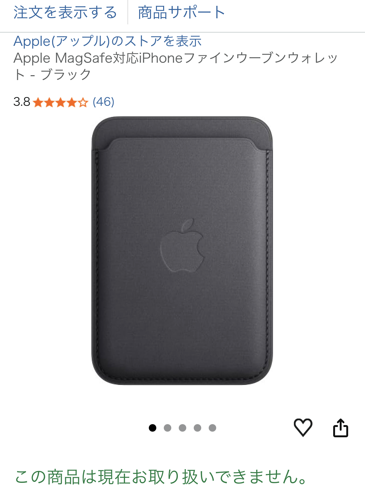

Apple純正のファインウーブンレザーケースは、手触りの良さとミニマルなデザインが魅力です。 しかし、1年使ってみると「見た目だけで選ぶと後悔する」というのが率直な感想です。
特にシリコン素材は摩耗に弱く、日常使用でも劣化が早い印象でした。
四隅の摩耗は想像以上に早く、 半年を過ぎたあたりからゴムの欠け・削れが目立ち始めます。
カバンやポケットへの出し入れだけで削れていくため、 「丁寧に扱えば長持ちする」というタイプの製品ではありません。
正直、純正でこの耐久性は残念というレベルです。
内側のマイクロファイバーはiPhoneを保護してくれるものの、 一部の縫製が甘く、糸が飛び出してくることがあります。
1万円近い純正ケースとしては、品質管理に疑問を感じる部分です。
どれだけ気をつけても、数日で表面がザラついて見えるため、 清潔感を保つのが難しいのが正直なところです。
ただし、MagSafeの安定性だけを求めるなら、 他社製の耐久性が高いケースでも十分代用できます。
Apple純正のMagSafeケースは、 「見た目・手触り・MagSafeの安定性」だけは本当に優秀です。
しかし、1年使った結果としては、 耐久性の低さがすべてを台無しにしていると感じました。
・四隅の欠け ・縫製のほつれ ・劣化の早さ
これらを許容できないなら、 他社製の耐久性重視ケースを選んだ方が満足度は高いです。
「1年使ってもきれいな状態を保ちたい」 「ケースに1万円近く払うなら耐久性も欲しい」
そんな人には純正ケースはおすすめしません。